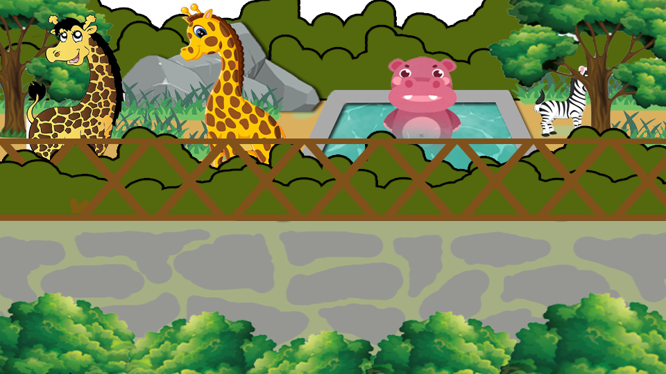

不独自离开，先问照顾我的大人。

沿小路走，找到前面的角色
点小路移动，也可以用左右方向键
你会怎么做？
这一关改编自《宝贝三十六计》的动物园场景，约需 3–5 分钟。孩子可以点小路走动，或按住左右按钮。
完成三个情境后，回到集合点。选错不会扣分，可以听解释后再试。
陪孩子聊一聊：不凭外表判断谁安全；离开前先征求照顾自己的大人同意。需要帮助时，和孩子约定好可以求助的人及集合地点。
朗读使用设备自带中文语音。如果没有声音，可由家长读题。刷新页面会重新开始。无需账号，不保存孩子的个人信息。
三个安全选择，都完成了
不独自离开，先问照顾我的大人。现在和家长说说，你记住了哪一个办法？